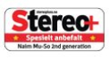
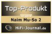
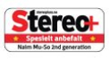
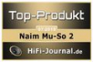

Mu-so 2
Mu-so Qb 2
Второе поколение Mu‑so.
Беспроводной саундбар.
Mu-so второго поколения – преемник отмеченной множеством наград беспроводной музыкальной системы Mu-so, модернизированной специалистами Naim из Солсбери для обеспечения лучших в своем классе характеристик, функциональности и удобства использования.
45 лет опыта компании Naim в создании Hi-Fi техники, новейшие достижения потоковых технологий и неповторимый дизайн – все это воплотилось в системе "все-в-одном", созданной для вас и вашей музыки.
Читать обзор →
Что нового?


Новое интуитивное колесо управления
Новый интуитивный интерфейс в виде колеса оснащен 15 сенсорными кнопками и массивным регулятором громкости с подсветкой. Дисплей пробуждается благодаря встроенному датчику близости.
Прямой доступ к Избранному
Индикатор Chromecast
Индикатор AirPlay
Индикатор Spotify
Создавайте мультирумные группы с другими продуктами Naim
Коснитесь, чтобы создать пару с Bluetooth устройством
Пролистывайте внешние входы (HDMI, цифровые и аналоговые)
Коснитесь для воспроизведения музыки с USB устройства


 


